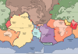

earth-crust
phenomenon

Source: Wikipedia
Wikipedia Page (Something wrong with this association? Let us know.)
Wikidata Page (Something wrong with this association? Let us know.)
Occurs in:
- earth-crust_material__bulk_modulus
- earth-crust_material~melt_carbonatite__mass_fraction
- earth-crust_material__density
- earth-crust_material__domain_max_of_power-law-viscosity-law_viscosity
- earth-crust_material__domain_min_of_power-law-viscosity-law_viscosity
- earth-crust_material__absolute_permittivity
- earth-crust_material__relative_permittivity
- earth-crust_material__electric_susceptibility
- earth-crust_material__electrical_conductivity
- earth-crust_material__inverse_of_electrical_conductivity
- earth-crust_material_p-seismic-wave__inverse_of_velocity
- earth-crust_material_s-seismic-wave__inverse_of_velocity
- earth-crust_material_isothermal-process__compressibility
- earth-crust_material_at-isothermal-process_compressibility__reference_temperature
- earth-crust_material__lame_first_parameter
- earth-crust_material__log10_of_electrical_conductivity
- earth-crust_material__log10_of_viscosity
- earth-crust_material__magnetic_permeability
- earth-crust_material__relative_magnetic_permeability
- earth-crust_material__magnetic_susceptibility
- earth-crust_material_isobaric-process__mass-specific_heat_capacity
- earth-crust_material_isochoric-process__mass-specific_heat_capacity
- earth-crust_material_oxygen__fugacity
- earth-crust_material_p-seismic-wave__velocity
- earth-crust_material_p-seismic-wave_s-seismic-wave__velocity_ratio
- earth-crust_material_material~partial-melt__mass_fraction
- earth-crust_material__poisson_ratio
- earth-crust_material__power-law-viscosity-law_activation_energy
- earth-crust_material__power-law-viscosity-law_exponent
- earth-crust_material__power-law-viscosity-law_reference_temperature
- earth-crust_material__power-law-viscosity-law_reference_viscosity
- earth-crust_material__power-law-viscosity-law_viscosity
- earth-crust_material__pressure
- earth-crust_material__second_invariant_of_deviatoric_plastic_strain
- earth-crust_material__second_invariant_of_deviatoric_strain_rate
- earth-crust_material__second_invariant_of_deviatoric_stress
- earth-crust_material_sh-seismic-wave__velocity
- earth-crust_material__shear_modulus
- earth-crust_material_sv-seismic-wave__velocity
- earth-crust_material__temperature
- earth-crust_material_isothermal-process__temperature_derivative_of_compressibility
- earth-crust_material__thermal_conductivity
- earth-crust_material__thermal_volume_expansion_coefficient
- earth-crust_material__shear_dynamic_viscosity
- earth-crust_material__volume_dynamic_viscosity
- earth-crust_material__shear_kinematic_viscosity
- earth-crust_material__volume_kinematic_viscosity
- earth-crust_material_isobaric-process__volume-specific_heat_capacity
- earth-crust_material_isochoric-process__volume-specific_heat_capacity
- earth-crust_material_water__mass_fraction
- earth-crust_material__young_modulus